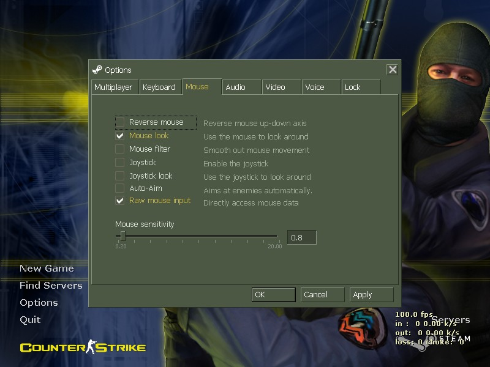
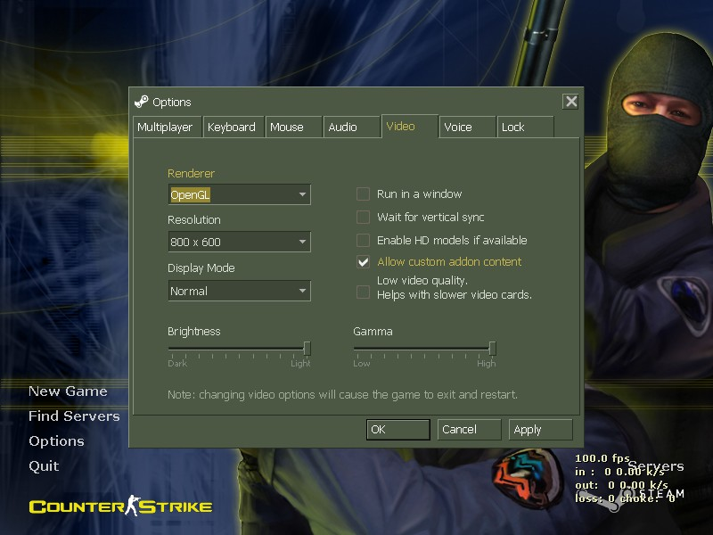

Counter-Strike
Settings
What settings you have in cs can determine whether your hit reg is spot on or you're lagging all over the place, and getting rolled by scrubs. Too many cs players do not properly configure their settings, and would be doing so much better with a few minutes of configuring them.
Contents
1 Choosing version
2 Configuring CS
2.1 In Game Settings
2.2 Userconfig
2.2.1 Netcode
2.2.2 Performance
2.2.3 Binds
2.2.4 Preferences
2.3 Launch Settings
What version of cs 1.6
First I'll cover choosing the right version of cs. As of 4/21/13, there are three main ways to run cs 1.6.
To run the official new steam version, just buy it here its only $10, and goes on sale for as low as $2.50 sometimes. You also get Counter-Strike: Condition Zero with it. This is worth several times its price. If you do not have a credit card, buy a steam giftcard, or a visa giftcard, etc.
Deprecated option: run the old 2009 build 4554 version on steam. This is a work around from when the Febuary 2013 steampipe update came out with lots of bugs. Most of the bugs have been patched since then and the newest steam cs provides the best experience currently. If you need to talk with nonsteam clients, this version is needed, but you will not be able to talk with other legit steam players with this method as the new update switched the voice codecs. This is a little bit tricky to set up, so don't try this if you don't have patience, follow guide here.
The third option is to use a nonsteam client. This is a last resort, support the developers and buy it as linked above. If your going to use a nonsteam client, use cswarzone (google it you leeching parasite).
Configuring CS
This guide is written for the new steam cs 1.6, but most of this applies to all other versions, differences in notation between them will be noted in extreme cases.
In Game Settings
Most settings can be set in game, it's easiest usually to first launch cs and change settings before going into config files.
Start by setting your name, spray, and crosshair preferences. I like the light blue(teal translucent color) soft on eyes(doesn't blend in with anything unless your on fy_poolday. Maybe in a later guide I'll provide instructions for custom sprays. On the keyboard tab you can change the key for certain in game functions, see later part in guide for binding in userconfig.
For the mouse tab, you want mouse look enabled, mouse filter turned off, and raw input enabled mainly. Mouse filter would make you less accurate. Rawinput disables all mouse accel by default, and is most reliable form of input. I highly recommend switching if you haven't already, though you will need to rediscover your favorite sensitivity. Pros in cs use low sensitivities and move there mouse with their arms not their wrists. Using a joystick puts you at a massive disadvantage against the competition. All servers disable autoaim, so don't bother leaving it on. 
Set audio and voice to your liking based on preference.
Now for video settings. OpenGL should always be the renderer, as software mode looks terrible. D3D is no longer a choice in the new cs, as it was buggy, and made making wallhacks easy. CS was designed for lower resolutions,so I recommend playing at either 1024 x 768, 800 x 600, or 640 x 480. I use 800 x 600. Recoil will be the same at any resolution as it is serverside. 
Set voice to whatever you like, and not sure who actually uses the content lock, but don't mess with that
For much more customization, you need to create a userconfig and set launch settings as linked below
Creating a userconfig!
Navigate to the Half-Life folder in
steamapps/common. Usually its in C:/Program
Files/Steam/Steamapps/common/. Inside you should see a
cstrike and a platform amoung other folders at a
minimum. Create a new folder named cstrike_addon, now
your folder should look something like this, note I
also have Half-Life installed in this screenshot.
 Enter the cstrike_addon
folder. This is the new place to put custom resources
for cs to use, such as maps, models, config files, etc,
so you no longer need to mix your custom files with the
vanila game files. The first thing we are going to add
a userconfig.cfg file, a file that servers cannot edit
with settings we want consistently in cs such as
netcode, sensitivity, etc. Download this
and save it to your cstrike_addons folder(right click
save link as/ save link target as.) A userconfig can be
broken up into 4 main parts. Netcode, performance,
binds, and preferences.
Enter the cstrike_addon
folder. This is the new place to put custom resources
for cs to use, such as maps, models, config files, etc,
so you no longer need to mix your custom files with the
vanila game files. The first thing we are going to add
a userconfig.cfg file, a file that servers cannot edit
with settings we want consistently in cs such as
netcode, sensitivity, etc. Download this
and save it to your cstrike_addons folder(right click
save link as/ save link target as.) A userconfig can be
broken up into 4 main parts. Netcode, performance,
binds, and preferences.
Netcode
rate - Amount of data you recieve from a server. Ping increases as rate increases. Generally you want a rate around 25000. While in the 2013 updates, the raised the max value to 100000, at time of writing few servers can handle that without massive lag or even have an sv_maxrate that high.
cl_cmdrate - Should be higher than frames per second, max amount of packets you send to the server. For 100 fps (you should have 100 fps in game), I've been using 105. This is too high if you are getting loss on netgraph and means you are not updating fast enough.
cl_updaterate - Amount of updates you are requesting from ther server. 100 was supposed to be max, but to cut down on support tickets, they raised it to 102. I use 102. Lower this if you are on a shit server that can't send enough updates, causing choke on netgraph.
ex_interp - Sets the amount of time (in seconds) to interpolate in between each successive update(cl_updaterate). If cl_updaterate is 100, this will automatically calculate correct interp. I force this to 0.01. Peope with bad internet are known to use .1 .Calculated 1/cl_updaterate.
cl_nosmooth - Determines whether to correct model abruptly when prediction is wrong. You want this set to 1 so your shots aren't missing.
Other netcode notes: Feel free to experiment with these settings, test them on different servers. Don't mess with fpsmodem, cl_rate, etc the net settings here are the only ones you should change. Some servers force rates on people for various reasons. On lan, your rate setting does not matter as sv_lanrate is used by the server
Performance
Counter-strike is an old game with low system requirements, so not many performance settings need to be manually set in a userconfig.
In order to get good hit registration, in cs you want to limit your fps. CS was designed to run at 100 fps. So first turn off vync with gl_vsync 0. Then you want to cap your fps_max at 99.5 with fps_max "99.5". Since the new cs update, in order to get exactly 100 fps, you need to set it to 99.5. If you are running an older version of cs, set fps_max to 100.
snd_noextraupdate to "1" means that cs will not use extra sound updates, so you will have better fps according to alfred at valve. There is no reason this should be set to "0".
gl_ansio "0" turns off antialiasing, so you'll have smoother fps and gameplay.
Here are the opengl graphics modes. I use the default one, but if you have a really good computer or a bad computer, feel free to try one of these.(don't put them all in your config)
gl_texturemode "GL_NEAREST" // Simple (no texture
filtering, no atmospheric filtering) [bad
quality]
gl_texturemode "GL_LINEAR" // Simple (texture
filtering, no atmospheric filtering)
gl_texturemode "GL_NEAREST_MIPMAP_NEAREST" // Bilinear
(no texture filtering, atmospheric filtering normal)
[low quality video checkbox in current cs]
gl_texturemode "GL_LINEAR_MIPMAP_NEAREST" // Bilinear
(texture filtering, atmospheric filtering normal)
[default, use this]
gl_texturemode "GL_NEAREST_MIPMAP_LINEAR" // Trilinear
(no texture filtering, atmospheric filtering
high)
gl_texturemode "GL_LINEAR_MIPMAP_LINEAR" // Trilinear
(no texture filtering, atmospheric filtering high)
[best quality]
Binds
Binding is a useful tool to make playing cs easier, and faster. The main use of binding in cs, is making buying easier and faster, as often the buy period is really short and it gets really tiresome buying stuff manually. Another use is to relocated buttons to easier places. I set c to use microphone, as pressing k is really akward when holding a mouse. Below is my binds(also included in the above userconfig. I am no means an expert in binding, look elsewhere if you want more detailed binding instructions and scripts.
bind "F3" "m4a1; ak47; primammo; deagle; secammo;
vesthelm; defuser; flash; hegren; sgren; nvgs;
flash"
bind "F4" "deagle; secammo; flash; hegren; sgren; nvgs;
defuser; shield; vesthelm"
bind "F5" "awp; primammo; deagle; secammo; flash;
hegren; sgren; nvgs; defuser; vesthelm"
bind "c" "+voicerecord"
bind "k" "radio3"
Preferences
In the preferences section, I put settings that I do not change often. By putting them in your userconfig.cfg, you have slowhack protection, so a server cannot make you loose your favorite mouse sensitivity or volume for example. If you have settings you like, you can copy them from config.cfg.
I recommend you use rawinput, as it provides better mouse movement and such than the mouse going through windows. m_rawinput 1 turns this on.
Launch settings
Some cs settings must be passed command line and cannot be changed in game via console or config files. After the Febuary 2013 update, many launch settings became deprecated and implemented as in game cvars.
To set your launch options for cs, in steam library right click counter-strike and click properties and then click set launch options.
-nofbo Recommends you add this launch switch to force cs to use the old rendering method(faster). If you just want to turn off antialiasing for the new cs, use -nomsaa . You can force your resolution with -w and -h, for example -w 800 -h 600